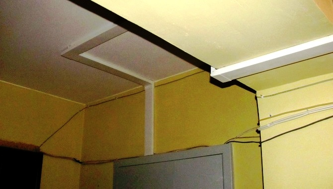
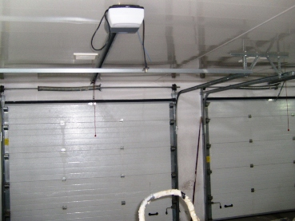

Качественный электромонтаж в Санкт-Петербурге и ленобласти, стаж 12 лет. Частный электрик, недорого и качественно.
Тел. 8 904 642 08 57 Николай.

Открытый монтаж электропроводки.
Строительство новых домов, коттеджей, дач или ремонт в квартире предполагают грамотное устройство электропроводки. Существует несколько методов выполнения работ - скрытый и открытый. И тот и другой отвечают всем требованиям безопасности, но каждый из них имеет свои особенности при монтаже. Грамотное выполнение проекта электромонтажа, прокладка проводов - залог безопасности и долговечности оказанных услуг.
Я предлагаю:
- бесплатную консультацию;
- возможность осуществления вызова на дом;
- быстрое и профессиональное исполнение заказа;
- наличие всех необходимых инструментов и расходного материала;
- наличие специального оборудования для поиска обрыва электропроводов, для штробирования стен и пр.;
- доступную ценовую политику.

Монтаж открытой электропроводки существенно отличается от устройства скрытой проводки. Основной задачей в этом случае становится спрятать провода под декоративные поверхности так, чтобы они были полностью безопасны и не портили внешней эстетики жилых комнат. Это отличный выход, который становится актуальным тогда, когда осуществляется капитальный ремонт, влекущий замену всех декоративных покрытий (штукатурки, обоев, плитки и т. п.) либо если отделка начинается с нуля. Этот способ также подходит для электромонтажа в деревянных домах, поскольку штробить дерево - достаточно сложная задача, а укладка кабеля внутри деревянной штробы попросту небезопасна.
Сколько стоит сделать открытую проводку?
Погонный метр - от 30 рублей.
Открытый монтаж электропроводки осуществляется в специальной гофре или кабель-каналах, которые обеспечивают ее безопасность от возгорания, замыкания. Кроме того, в кабель-каналах можно осуществить проводку телевизионного кабеля, телефонных коммуникаций и пр. Этот способ уже не первый год пользуется успехом при монтаже охранной сигнализации, системы пожаробезопасности, а также для прокладки компьютерных коммуникаций.
Преимуществами открытой проводки бесспорно можно назвать:
- возможность быстро найти обрыв провода;
- без затруднений осуществить ремонт проводки;
- отсутствие пыли и грязи от штробления стен;
- скорость и простота монтажных работ.
Что я предлагаю в качестве услуг?
Более десятка лет я выполняю все работы, связанные с электрикой в домах, квартирах, офисах, административных и общественных зданиях.
Быстро и грамотно я выполню:
- электропроводку в жилом или нежилом помещении (скрытую, открытую);
- установку счетчика электроэнергии в соответствие с правилами ГОСТа;
- установку розеток, выключателей;
- монтаж осветительных приборов;
- подключение и ремонт бойлера, газовой колонки и прочие услуги.
 Большой практический опыт позволяет мне быстро и без потери качества выполнить проводку кабеля под гипсокартоновыми листами или любым другим декоративно-отделочным материалом, под натяжным потолком. Монтаж проводов осуществляется в гофре либо кабель-канале, после чего выполняется монтаж гипсокартона, панелей и прочих покрытий. Несмотря на простоту работы, работа все же требует мастерства и профессионализма, ведь любой промах может стать причиной замыкания или возгорания проводки. Я выполню работу грамотно, профессионально и с гарантией в любое удобное для вас время, включая выходные дни. Звоните!
Большой практический опыт позволяет мне быстро и без потери качества выполнить проводку кабеля под гипсокартоновыми листами или любым другим декоративно-отделочным материалом, под натяжным потолком. Монтаж проводов осуществляется в гофре либо кабель-канале, после чего выполняется монтаж гипсокартона, панелей и прочих покрытий. Несмотря на простоту работы, работа все же требует мастерства и профессионализма, ведь любой промах может стать причиной замыкания или возгорания проводки. Я выполню работу грамотно, профессионально и с гарантией в любое удобное для вас время, включая выходные дни. Звоните!

Сколько будут стоить материалы.
Замена электропроводки в панельном доме.
Расценки на электропроводку квартир.
Сколько стоит замена электропроводки в двухкомнатной квартире?.
Сколько стоит проложить проводку в 3 ком квартире?
Сколько стоит проложить проводку в четырехкомнатной квартире?
Сколько стоит сделать внутреннюю проводку?.
Установка люстр и светильников.